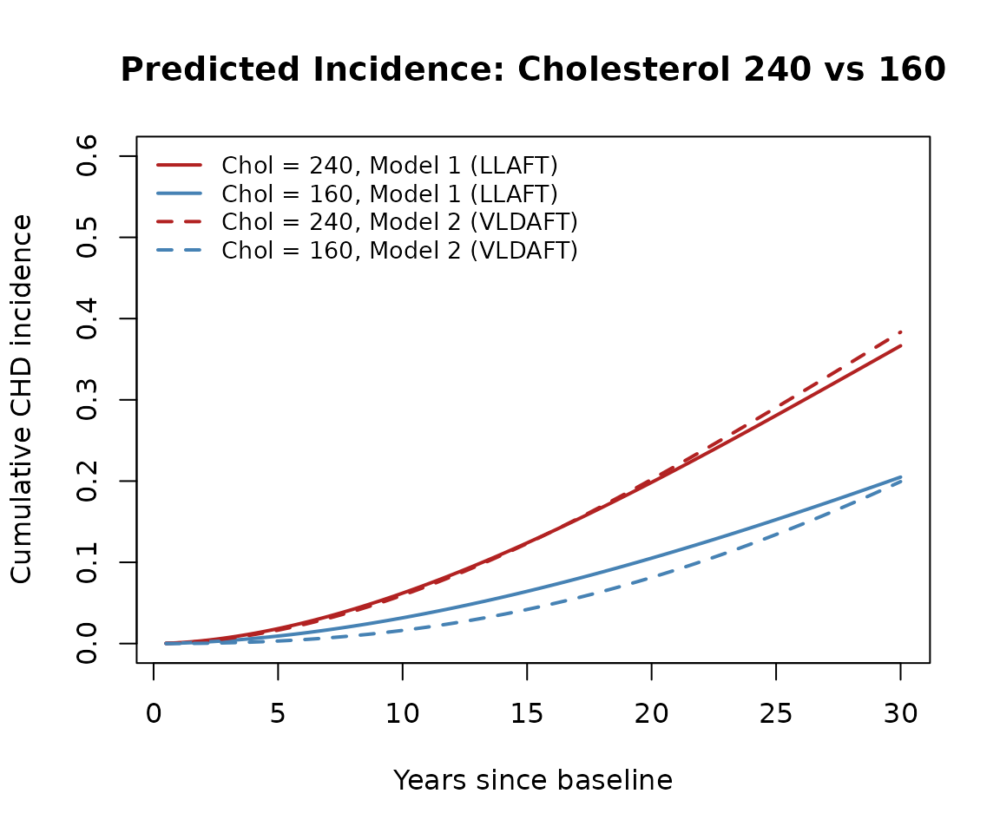

Reproducing Anderson (1991): A Nonproportional Hazards Weibull AFT Model
anderson1991.RmdIntroduction
Anderson (1991) introduced the varying location and dispersion
accelerated failure time (VLDAFT) model, in which both the location
and the dispersion
of a log-linear survival model can depend on covariates and on each
other. This vignette reproduces the results from the original Biometrics
paper using the vldaft package. This is done both with the
original C routines to compute the log-likelihood and score functions,
as well as through the gamlss2 framework for comparison.
Both approaches yield the same results and replicate the paper. We hope
that this demonstration enables further use of the approach which can
simplify modeling. A particular advantage is on the Weibull
distribution, where the VLDAFT model allows for nonproportional hazards
by letting the dispersion depend on the location parameter.
Reference: Anderson, K.M. (1991). A nonproportional hazards Weibull accelerated failure time regression model. Biometrics, 47, 281–288.
The Model
The VLDAFT model assumes
where is a linear function of covariates, and the log-dispersion can depend on both covariates and on itself:
Here is the centered location parameter. When , this reduces to the standard linear location AFT (LLAFT) model with proportional hazards under a Weibull distribution.
Data
The example uses 1,433 men aged 30–49 from the Framingham Heart Study, followed for approximately 32 years for coronary heart disease (CHD) incidence. Risk factors were measured at baseline.
cat("Observations:", info$observations, "\n")
#> Observations: 1433
cat("CHD events:", info$chd_events, "\n")
#> CHD events: 501
cat("Censored:", info$censored, "\n")
#> Censored: 932The covariates are log(Age), log(systolic blood pressure), log(cholesterol), Metropolitan relative weight, and a smoking indicator.
print(info$covariate_summary)
#> ln.Age. ln.SBP. ln.Chol. MRW
#> Min. :3.401 Min. :4.382 Min. :4.745 Min. : 78.0
#> 1st Qu.:3.584 1st Qu.:4.771 1st Qu.:5.288 1st Qu.:108.0
#> Median :3.689 Median :4.852 Median :5.398 Median :118.0
#> Mean :3.694 Mean :4.858 Mean :5.398 Mean :119.2
#> 3rd Qu.:3.807 3rd Qu.:4.942 3rd Qu.:5.509 3rd Qu.:130.0
#> Max. :3.892 Max. :5.521 Max. :6.342 Max. :183.0
#> Smoke
#> Min. :0.0000
#> 1st Qu.:0.0000
#> Median :1.0000
#> Mean :0.6971
#> 3rd Qu.:1.0000
#> Max. :1.0000Model Fitting
Anderson (1991) reported four Weibull models of increasing complexity. We reproduce all four.
Model 1: Standard LLAFT (proportional hazards Weibull)
fit1 <- vldaft(Surv(YTCHD, CHD) ~ ln.Age. + ln.SBP. + ln.Chol. + MRW + Smoke,
data = MLT50, dist = "weibull", theta = 0)
cat(paste(summaries$fit1, collapse = "\n"), "\n")
#> AFT Regression Model (Anderson 1991)
#>
#> Call:
#> vldaft(formula = Surv(YTCHD, CHD) ~ ln.Age. + ln.SBP. + ln.Chol. +
#> MRW + Smoke, data = MLT50, dist = "weibull", theta = 0)
#>
#> Distribution: weibull
#> Observations: 1433
#> Log-likelihood: -1104.69 (init: -35508.1 )
#> Score statistic: -1
#> Iterations: 14
#>
#> Coefficients:
#> Estimate Std. Error z value Pr(>|z|)
#> gamma:(Intercept) -0.5804654 0.0401405 -14.4608 < 2.2e-16 ***
#> eta:(Intercept) 3.9189608 0.0340533 115.0832 < 2.2e-16 ***
#> eta:ln.Age. -1.2221808 0.2162649 -5.6513 1.592e-08 ***
#> eta:ln.SBP. -0.9485825 0.2070646 -4.5811 4.625e-06 ***
#> eta:ln.Chol. -0.9503949 0.1415783 -6.7129 1.908e-11 ***
#> eta:MRW -0.0046964 0.0016137 -2.9102 0.0036114 **
#> eta:Smoke -0.1989825 0.0565299 -3.5199 0.0004316 ***
#> ---
#> Signif. codes: 0 ‘***’ 0.001 ‘**’ 0.01 ‘*’ 0.05 ‘.’ 0.1 ‘ ’ 1Since Model 1 is a standard Weibull AFT, we can cross-check against
survival::survreg:
fit_survreg <- survreg(
Surv(YTCHD, CHD) ~ ln.Age. + ln.SBP. + ln.Chol. + MRW + Smoke,
data = MLT50, dist = "weibull")
print(checks$coef_compare, digits = 7)
#> survreg vldaft difference
#> (Intercept) 18.869878310 18.869878192 1.184292e-07
#> ln.Age. -1.222180634 -1.222180769 1.350743e-07
#> ln.SBP. -0.948582322 -0.948582481 1.582619e-07
#> ln.Chol. -0.950395178 -0.950394935 -2.432144e-07
#> MRW -0.004696388 -0.004696388 -1.468580e-10
#> Smoke -0.198982499 -0.198982501 2.195279e-09
# Compare scale parameter
cat("survreg scale (sigma):", checks$survreg_sigma, "\n")
#> survreg scale (sigma): 0.5596379
cat("vldaft scale (sigma):", checks$vldaft_sigma, "\n")
#> vldaft scale (sigma): 0.5596379The coefficients and scale parameter agree, confirming the
vldaft implementation for the standard model.
Model 2: VLDAFT with dispersion depending on location
fit2 <- vldaft(Surv(YTCHD, CHD) ~ ln.Age. + ln.SBP. + ln.Chol. + MRW + Smoke,
data = MLT50, dist = "weibull", theta = 1)
cat(paste(summaries$fit2, collapse = "\n"), "\n")
#> AFT Regression Model (Anderson 1991)
#>
#> Call:
#> vldaft(formula = Surv(YTCHD, CHD) ~ ln.Age. + ln.SBP. + ln.Chol. +
#> MRW + Smoke, data = MLT50, dist = "weibull", theta = 1)
#>
#> Distribution: weibull
#> Observations: 1433
#> Log-likelihood: -1094.24 (init: -35508.1 )
#> Score statistic: -1
#> Iterations: 14
#>
#> Coefficients:
#> Estimate Std. Error z value Pr(>|z|)
#> gamma:(Intercept) 2.9778006 1.3457787 2.2127 0.0269185 *
#> eta:(Intercept) 3.8385302 0.0321886 119.2511 < 2.2e-16 ***
#> eta:ln.Age. -0.7417504 0.1770810 -4.1888 2.805e-05 ***
#> eta:ln.SBP. -0.6579658 0.1730218 -3.8028 0.0001431 ***
#> eta:ln.Chol. -0.6071953 0.1341263 -4.5270 5.982e-06 ***
#> eta:MRW -0.0026011 0.0011570 -2.2481 0.0245711 *
#> eta:Smoke -0.1594967 0.0389560 -4.0943 4.235e-05 ***
#> theta1 -0.9525121 0.3585544 -2.6565 0.0078948 **
#> ---
#> Signif. codes: 0 ‘***’ 0.001 ‘**’ 0.01 ‘*’ 0.05 ‘.’ 0.1 ‘ ’ 1Model 3a: Quadratic theta
As noted in the paper, convergence from zero starting values can be difficult for more complex models. We use Model 2 estimates as starting values, appending zero for the new parameter.
init3a <- c(fit2$coefficients, 0)
fit3a <- vldaft(Surv(YTCHD, CHD) ~ ln.Age. + ln.SBP. + ln.Chol. + MRW + Smoke,
data = MLT50, dist = "weibull", theta = 2, init = init3a)
cat(paste(summaries$fit3a, collapse = "\n"), "\n")
#> AFT Regression Model (Anderson 1991)
#>
#> Call:
#> vldaft(formula = Surv(YTCHD, CHD) ~ ln.Age. + ln.SBP. + ln.Chol. +
#> MRW + Smoke, data = MLT50, dist = "weibull", theta = 2, init = init3a)
#>
#> Distribution: weibull
#> Observations: 1433
#> Log-likelihood: -1094.2 (init: -1094.24 )
#> Score statistic: 0.289811
#> Iterations: 4
#>
#> Coefficients:
#> Estimate Std. Error z value Pr(>|z|)
#> gamma:(Intercept) 0.5870780 8.1632058 0.0719 0.9426675
#> eta:(Intercept) 3.8377582 0.0322726 118.9168 < 2.2e-16 ***
#> eta:ln.Age. -0.7227241 0.1862179 -3.8811 0.0001040 ***
#> eta:ln.SBP. -0.6569947 0.1720719 -3.8181 0.0001345 ***
#> eta:ln.Chol. -0.6017253 0.1353597 -4.4454 8.774e-06 ***
#> eta:MRW -0.0025126 0.0011802 -2.1290 0.0332502 *
#> eta:Smoke -0.1574287 0.0391718 -4.0189 5.846e-05 ***
#> theta1 0.3278279 4.3631493 0.0751 0.9401068
#> theta2 -0.1709261 0.5854120 -0.2920 0.7703052
#> ---
#> Signif. codes: 0 ‘***’ 0.001 ‘**’ 0.01 ‘*’ 0.05 ‘.’ 0.1 ‘ ’ 1Model 3b: Full scale model
Here both location and scale have separate linear predictors with the
full set of covariates. The | operator in the formula
separates location (left) from scale (right) covariates.
fit3b <- vldaft(
Surv(YTCHD, CHD) ~ ln.Age. + ln.SBP. + ln.Chol. + MRW + Smoke |
ln.Age. + ln.SBP. + ln.Chol. + MRW + Smoke,
data = MLT50, dist = "weibull", theta = 0)
cat(paste(summaries$fit3b, collapse = "\n"), "\n")
#> AFT Regression Model (Anderson 1991)
#>
#> Call:
#> vldaft(formula = Surv(YTCHD, CHD) ~ ln.Age. + ln.SBP. + ln.Chol. +
#> MRW + Smoke | ln.Age. + ln.SBP. + ln.Chol. + MRW + Smoke,
#> data = MLT50, dist = "weibull", theta = 0)
#>
#> Distribution: weibull
#> Observations: 1433
#> Log-likelihood: -1092.5 (init: -35508.1 )
#> Score statistic: -1
#> Iterations: 18
#>
#> Coefficients:
#> Estimate Std. Error z value Pr(>|z|)
#> gamma:(Intercept) -0.6740649 0.0442573 -15.2306 < 2.2e-16 ***
#> gamma:ln.Age. 0.7035408 0.3348376 2.1011 0.0356286 *
#> gamma:ln.SBP. 0.5379124 0.3174538 1.6945 0.0901782 .
#> gamma:ln.Chol. 0.4767665 0.2323611 2.0518 0.0401858 *
#> gamma:MRW 0.0014924 0.0025257 0.5909 0.5545905
#> gamma:Smoke 0.2940132 0.0912093 3.2235 0.0012663 **
#> eta:(Intercept) 3.8446356 0.0330466 116.3399 < 2.2e-16 ***
#> eta:ln.Age. -0.7525451 0.2549722 -2.9515 0.0031626 **
#> eta:ln.SBP. -0.7599684 0.2354839 -3.2273 0.0012498 **
#> eta:ln.Chol. -0.6658450 0.1720855 -3.8693 0.0001092 ***
#> eta:MRW -0.0032470 0.0018402 -1.7645 0.0776476 .
#> eta:Smoke -0.0688494 0.0619879 -1.1107 0.2667015
#> ---
#> Signif. codes: 0 ‘***’ 0.001 ‘**’ 0.01 ‘*’ 0.05 ‘.’ 0.1 ‘ ’ 1Comparison with Published Results
The paper reports log-likelihoods on the time scale, which includes a Jacobian term . We adjust our log-likelihoods accordingly.
print(checks$results_table, row.names = FALSE)
#> Model vldaft Paper Difference
#> 1 (LLAFT) -2510.96 -2510.96 0
#> 2 (VLDAFT, theta=1) -2500.50 -2500.50 0
#> 3a (VLDAFT, theta=2) -2500.46 -2500.46 0
#> 3b (full scale) -2498.76 -2498.76 0Likelihood Ratio Test: Model 2 vs Model 1
cat(sprintf("LRT statistic: %.2f (paper: 20.92)\n", checks$lrt))
#> LRT statistic: 20.91 (paper: 20.92)
cat(sprintf("p-value (chi-sq, 1 df): %.2e\n", checks$lrt_p))
#> p-value (chi-sq, 1 df): 4.83e-06The LLAFT model is strongly rejected in favor of the VLDAFT model (, ).
Model 2 Coefficient Comparison
print(checks$coef_table, row.names = FALSE)
#> Parameter vldaft Paper
#> beta0 (intercept) 13.4733 13.474000
#> beta1 (ln Age) -0.7418 -0.741800
#> beta2 (ln SBP) -0.6580 -0.658000
#> beta3 (ln Chol) -0.6072 -0.607200
#> beta4 (MRW) -0.0026 -0.002601
#> beta5 (Smoke) -0.1595 -0.159500
#> theta0 (log sigma) 2.9778 2.978000
#> theta1 -0.9525 -0.952500All coefficients match the published values to their reported precision.
Fitting with gamlss2
The vldaft package provides
gamlss2-compatible family objects
(AFT_Weibull, AFT_Logistic, etc.) so that the
same models can be fitted through the gamlss2 framework.
This enables the use of smooth terms, additional diagnostics, and the
full gamlss2 infrastructure.
We demonstrate by fitting Model 2 (the VLDAFT model with
coupling) via gamlss2. In the gamlss2 formula,
the | separator delineates submodels for each parameter:
mu | sigma | theta1.
library(gamlss2)
g2 <- gamlss2(
Surv(YTCHD, CHD) ~ ln.Age. + ln.SBP. + ln.Chol. + MRW + Smoke | 1 | 1,
data = MLT50, family = AFT_Weibull(theta = 1),
control = gamlss2_control(maxit = 200))
summary(g2)The gamlss2 log-likelihood matches the
vldaft() result:
cat(sprintf("vldaft loglik: %.3f\ngamlss2 loglik: %.3f\n",
checks$gamlss2_loglik[["vldaft"]],
checks$gamlss2_loglik[["gamlss2"]]))
#> vldaft loglik: -2500.503
#> gamlss2 loglik: -2500.510We can also verify that Models 1, 3a, and 3b agree:
g1 <- gamlss2(
Surv(YTCHD, CHD) ~ ln.Age. + ln.SBP. + ln.Chol. + MRW + Smoke,
data = MLT50, family = AFT_Weibull())
g3a <- gamlss2(
Surv(YTCHD, CHD) ~ ln.Age. + ln.SBP. + ln.Chol. + MRW + Smoke | 1 | 1 | 1,
data = MLT50, family = AFT_Weibull(theta = 2),
control = gamlss2_control(maxit = 200))
g3b <- gamlss2(
Surv(YTCHD, CHD) ~ ln.Age. + ln.SBP. + ln.Chol. + MRW + Smoke |
ln.Age. + ln.SBP. + ln.Chol. + MRW + Smoke,
data = MLT50, family = AFT_Weibull())
print(checks$gamlss2_check, row.names = FALSE)
#> Model vldaft gamlss2 Difference
#> 1 (LLAFT) -2510.96 -2510.96 0.00
#> 2 (VLDAFT, theta=1) -2500.50 -2500.51 -0.01
#> 3a (VLDAFT, theta=2) -2500.46 -2500.47 -0.01
#> 3b (full scale) -2498.76 -2498.76 0.00Interpretation
The significant negative means that as increases (i.e., as predicted log-survival time increases due to lower risk), the dispersion also increases. Equivalently, the cumulative hazard ratio for two individuals shrinks toward unity over longer follow-up. This implies:
- Neither the standard Weibull model nor the Cox proportional hazards model is adequate for these data.
- The association between risk factors and relative risk diminishes over time since measurement—a “converging hazards” phenomenon.
Predicted Cumulative Incidence
Follow-up in the dataset ranges from less than 1 month to nearly 36 years (median 31 years, interquartile range 19–34 years). We restrict predictions to 30 years to stay within the well-observed range.
To illustrate the nonproportional hazards effect, we compare predicted cumulative incidence for two individuals differing only in total cholesterol (160 vs 240 mg/dL), with all other covariates held at their sample means.
Under the Weibull model, where .
t_grid <- prediction$t_grid
inc1_240 <- prediction$incidence$model1_chol240
inc1_160 <- prediction$incidence$model1_chol160
inc2_240 <- prediction$incidence$model2_chol240
inc2_160 <- prediction$incidence$model2_chol160
diff1 <- prediction$excess$model1
diff2 <- prediction$excess$model2
plot(t_grid, inc1_240, type = "l",
col = "firebrick", lwd = 2, lty = 1, ylim = c(0, 0.6),
xlab = "Years since baseline", ylab = "Cumulative CHD incidence",
main = "Predicted Incidence: Cholesterol 240 vs 160")
lines(t_grid, inc1_160,
col = "steelblue", lwd = 2, lty = 1)
lines(t_grid, inc2_240,
col = "firebrick", lwd = 2, lty = 2)
lines(t_grid, inc2_160,
col = "steelblue", lwd = 2, lty = 2)
legend("topleft",
legend = c("Chol = 240, Model 1 (LLAFT)",
"Chol = 160, Model 1 (LLAFT)",
"Chol = 240, Model 2 (VLDAFT)",
"Chol = 160, Model 2 (VLDAFT)"),
col = c("firebrick", "steelblue", "firebrick", "steelblue"),
lty = c(1, 1, 2, 2), lwd = 2, bty = "n", cex = 0.85)
The difference in cumulative incidence between cholesterol 240 and 160 quantifies how much additional risk the higher cholesterol confers over time under each model.
plot(t_grid, diff1, type = "l", lwd = 2, lty = 1,
col = "black", ylim = c(0, max(diff1, diff2) * 1.1),
xlab = "Years since baseline",
ylab = "Difference in cumulative incidence",
main = "Excess Incidence: Cholesterol 240 vs 160")
lines(t_grid, diff2, lwd = 2, lty = 2, col = "black")
legend("topleft",
legend = c("Model 1 (LLAFT)", "Model 2 (VLDAFT)"),
lty = c(1, 2), lwd = 2, bty = "n")Under both models, higher cholesterol is associated with higher cumulative incidence of CHD over time. The difference in cumulative incidence also grows over time. The observation that the difference is always greater with the VLDAFT model reflects the model’s ability to capture nonproportional hazards.